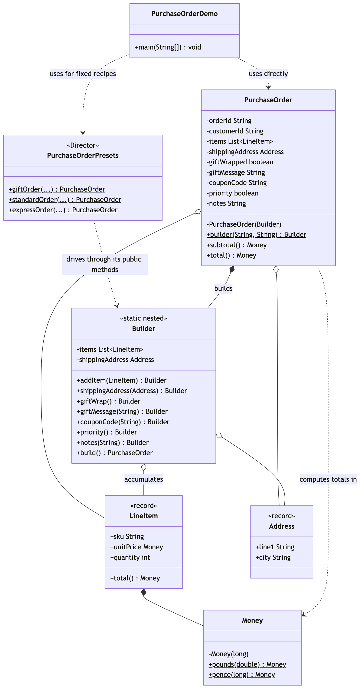

Builder Pattern
Demonstrates the builder pattern — a Gang of Four creational pattern, and also Item 2 of Effective Java, described from two angles — using a purchase order with two required facts and five independent optional pieces.
It picks up right where ../static-factory-pattern leaves off: a constructor with too many parameters. Where a static factory method fixes an unreadable single call, a builder fixes a constructor with too many optional pieces to decide in one call — and the two compose, since PurchaseOrder.builder(...) is itself a static factory method.
PurchaseOrder— the product. Immutable, with a private constructor reachable only throughPurchaseOrder.builder(orderId, customerId).PurchaseOrder.Builder— a static nested class. Every method butbuild()returnsthis, so calls chain into one statement.build()validates (at least one item, a shipping address) only once the caller declares itself finished, then takesList.copyOfsnapshots so the finished order can never be reached back into through a reused builder.PurchaseOrderPresets— the GoF Director role, written the idiomatic Java way: static methods, not a class hierarchy. Every preset drivesBuilder's public methods only — neverPurchaseOrder's constructor or fields.LineItem,Address— plain records. Two or three required fields each, nothing to decide, so a constructor is the right tool — the contrast withPurchaseOrderis deliberate.Money— the same value type from the static-factory-pattern project, reused here for line-item totals, fees and the coupon discount.PurchaseOrderDemo— runnable entry point: one order built by hand, three built from presets, proof that a reused builder never mutates an order it already built, and two orders rejected on purpose.
The point in one line: a constructor makes you decide the whole object in one call; a builder lets you decide it a piece at a time, and checks it is complete only when you say you are done.
Run
./gradlew runWhich prints:
PurchaseOrder{ORD-9001, customer=CUST-100, items=2, giftWrapped=true, priority=false, coupon=WELCOME10, total=£49.04}
subtotal £51.99, total £49.04
PurchaseOrder{ORD-9002, customer=CUST-101, items=1, giftWrapped=true, priority=false, coupon=none, total=£19.50}
PurchaseOrder{ORD-9003, customer=CUST-102, items=1, giftWrapped=false, priority=false, coupon=none, total=£34.99}
PurchaseOrder{ORD-9004, customer=CUST-103, items=2, giftWrapped=false, priority=true, coupon=none, total=£57.99}
notes: Ship same-day if received before 2pm.
first items: 1, second items: 2
Rejected: a purchase order needs at least one item
Rejected: a purchase order needs a shipping addressTest
./gradlew testThirteen tests, covering the required-field checks, the gift-message-implies-gift-wrap rule, fee stacking, the coupon discount, and that a reused builder never reaches back into an order it already built.
Learning Material
Start here if you are new to the technique — the docs are ordered as a learning path.
| Document | What it covers |
|---|---|
docs/prerequisites.md | What to know and install before you start |
docs/problem-statement.md | The problem, starting from a nine-parameter constructor and the telescoping-constructor workaround |
docs/builder-pattern-explained.md | The technique, the code walked through, and where it stops paying off |
docs/class-diagram.md | Static structure, and the one door in |
docs/uml-diagram.md | Runtime call flow — the chain, then build() |
docs/animation.html | Animated, step-by-step walkthrough — open in a browser. Optional narration via the Narration button |
docs/session.md | A 60-minute guided session plan for teaching it |
docs/video-spec.md | The specification the teaching video is built to — outputs, slide system, narration rules, and how to port it to another project |
docs/youtube.md | Title, description, chapters and thumbnail for publishing the video |
docs/thumbnail.png | The 1280×720 image to upload as the YouTube thumbnail |
docs/spec.md | The project specification — problem, code, video and publishing quality bar. Also as spec.html |
video/ | A narrated ~10.5 minute video, plus the script and build pipeline |

The pattern in one picture

Video
video/builder-pattern-explained.mp4 — 1080p, ~10.5 minutes, narrated. An audio-only version is alongside it. See video/README.md to rebuild or re-record it.
Related
../static-factory-pattern— read this one first if you have not already. It fixes an unreadable single call; this project fixes a constructor with too many optional pieces to decide in one call, and the two compose.../simple-factory-patternand../factory-method-pattern— a different question: which class, not which pieces.../abstract-factory-pattern— one choice producing a whole matching set of objects, rather than one object assembled gradually.
Static Factory asks "give me one that…". Simple Factory asks "which one?". Factory Method asks "which one — decided by my subclass?". Abstract Factory asks "which whole set?". Builder asks a different kind of question entirely: "which pieces, assembled in what order, for this one object?"